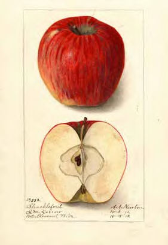
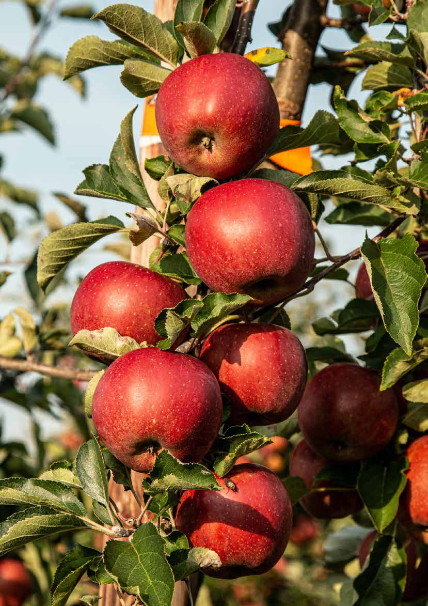

By Ephrayim Baskin | Rosh Hashana 5784 — September 2023
The hardest part of writing an article is finding a topic. For this Rosh Hashana’s Young Yeshivah Magazine, I thought I had a doozy. I was going to write on the production and kashrus of cider and mead (the alcoholic version of apples and honey). It was perfect: apples and honey with a manufacturing twist, add in a few puns, some quirky food science factoids and… she’s apples.

Alas, I got stuck on the word apple. Then I got stuck on honey too. Finally, I got stuck on the other side of the magazine deadline. So here it is, not the article I envisioned, but a second bite of the apple, nonetheless.
How do you get stuck on apples, you ask? Well, it turns out that not only does the translation of tapuach not exclusively refer to apples, but even the English word “apple” might not refer to apples either. In fact, the entire time we may have just been comparing apples to oranges, which ironically are also referred to as apples in more than one language. For that matter, both apples and oranges are also technically considered “devash”. If you’re confused already, join the club. Let’s start at the beginning (literally).
Why do we eat apples and honey on Rosh Hashana?
There are many answers to this question. However, the halachic codifiers (Tur OC 583) base the custom on the Talmudic teaching (Kerisus 5b) that a person should eat “simanim” which serve as positive omens for the new year. From here, many communities throughout the ages developed other good omens, including the old Ashkenazic custom dating back to the Geonim to eat tapuach matok bedvash, commonly translated as sweet apple in honey, so that Hashem should bring a sweet new year upon us.
I get the sweet part, but why apples?
The Maharil says that apples refer to the orchard of apples hinted to in the story of Yaakov’s blessings from Yitzchok. At the end of Toldos (27:27), Yaakov, who has disguised himself as Esav to finagle the firstborn blessings from his father, comes into his father’s room. Yitzchok observes that his aroma is that of the field which Hashem had blessed. The Talmud (Taanis 29b) says that this was the aroma of Gan Eden which is the smell of an apple orchard. The Zohar refers to this as the Chakal Tapuchin Kadishin – the holy orchard of “apples”.
On Rosh Hashana, we want to receive the blessings just like Yaakov did from his father (the apple doesn’t fall far from the tree). According to some, this episode with Yitzchok’s blessings occurred on Rosh Hashana.
The word tapuach also has the same numerical value as “seh akeidah” – the ram of the Akeidah, and is thus another reason why we eat “tapuach” on Rosh Hashana, to achieve the same goal of changing negative judgement into positive (imrei noam).
However, the tapuach translation is not so simple. Tosfos in the Talmudic passage above (Taanis 29b) comments that this tapuach aroma was that of an esrog tree. This is supported by the Aramaic translation of tapuach in Shir HaShirim by Targum Yonasan. Similarly, the midrash tells us that the clothes Yaakov wore were Adam’s clothes from Gan Eden, and according to one opinion, the Tree of Knowledge was an esrog tree.
Why would tapuach mean esrog? Well, the word tapuach is related to the verb nofeach, to breathe or inflate. For this reason, we see that the noun tapuach refers to many round and inflated items in Loshon Hakodesh. For example, the Talmud uses tapuach to describe the pile of ashes in the middle of the Altar. In modern Hebrew, the word tapuach has been used to name many more things: an orange is a tapuach zahav, and a potato is tapuach adomoh and so on.
Hebrew is not the only language to do this. In fact, until the 17th century, the word apple in English referred to any fruit, even nuts, other than berries. For instance, finger-apples referred to dates, apples of paradise referred to bananas and earth-apples referred to cucumbers. There is a similar phenomenon in other languages; for example, the French call the potato pomme de terre (ground apple).
Interestingly, the Maharil is quoted in Eliya Rabba (583.2) to have the custom of eating an “erd-eppel” or “ground apple” on Rosh Hashana, upon which he would recite Shehechiyanu. The commentaries question how one could make a Shehechiyanu on a potato? They provide some interesting pilpulim such as that the potato wasn’t eaten in those days like it is eaten these days, and it wasn’t yet stored in the ground from season to season. However, historically speaking, the Maharil’s “erd-eppel” could not have been a potato, for the Maharil passed away in the 15th century, well before the potato even arrived in Europe! More likely, it was some type of melon. Either way, this demonstrates that the universal apple/eppel/ pomme/tapuach all just refer to round and overly inflated items. Take that, New York.

Nevertheless, the original minhag clearly specifies “apples” that are sweet, so that might indeed be a clear reference to apples as we know them today. That is historically realistic, for apples originated in central Asia. The city of Alma Ata in Kazakhstan, where the Rebbe’s father, Reb Levi Yitzchok, is buried, means “full of apples”. There is also archaeological evidence of apples in the Middle East and Egypt during the times of the Exodus, in line with the Midrash that the women gave birth under the “apple trees”. That is, indeed, another reason we eat apples on Rosh Hashana, to invoke the merit of our righteous foremothers.
Getting stuck with the translation of devash was a pun unintended (unusual for my articles). There are places where devash refers to sugar cane, and in some places it of course refers to bee’s honey. But in Tanach, devash usually refers to sweet extract of fruit, especially dates. In Vayikra 2:11, Rashi comments that all sweetness from fruit is called “devash”. The Rashbam on that verse translates devash as any fruits of a tree. Yep – even if our apple isn’t a tapuach, it is still devash!
That said, there are some explanations from some wise apples as to why our custom is to use bees honey specifically. Bees sting, but also give honey, so we ask that any gevurah (severity) be transformed to sweetness (Midrash Pinchas). Another explanation is that food is generally impure if its source is impure (e.g. an egg from a non-kosher bird is not kosher), with the exception of bee honey. So we ask Hashem that even if we are coming into the new year from an impure state, we pray that the words coming from our lips should be pure and accepted by Hashem (Nachalas Avos).
No matter how you like them apples, I pray that this year will be the one where Hashem translates all our words into incredibly sweet and inflated brochos!
Originally published in Young Yeshivah Magazine. Republished with permission.